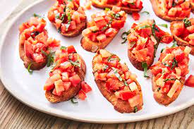

Bruschetta

Description
Bruschetta (pronouced brew-SKET-tah) is an Italian appetizer or antipasti that starts with a base of toasted or
grilled bread. The bread is then served warm either with a topping spooned over or with a topping on the side so
each person can build their own bruschetta. Bruschetta is meant to be served as a hand-held finger food, large
enough for one or two bites.
Ingredients
- 1 loaf French bread, cut into 1/4-inch slices
- 1 tablespoon extra-virgin olive oil
- 8 roma (plum) tomatoes, diced
- 1/3 cup chopped fresh basil
- 1 ounce Parmesan chees, freshly grated
- 2 clover garlic, minced
- 1 tablespoon good quality balsamic vinegar
- 2 teaspoons extra-virgin olive oil
- 1/4 teaspoon kosher salt
- 1/4 teaspoon freshly ground black pepper